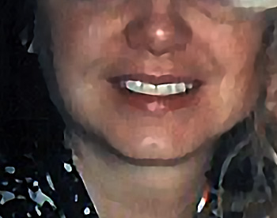
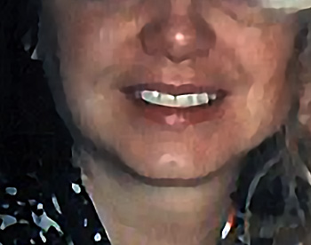

Arrested for the Murder of JonBenet Ramsey
Being arrested in 2006 was what I had successfully avoided for 10 years since her death and for the 5 years of international running as a fugitive leading up to my 2006 arrest. The proof of that was the fact that I was in my 5th year of evading California authorities and the FBI when I was arrested against my will in 2006. I did not want fame for killing a child. The media arrived from all over the world and descended in on me against my will. Am I to be blamed for this?
(JMK) 06/10/24 - In 2006, I was arrested for the murder, kidnapping, and sex assault of six year old JonBenet Ramsey and extradited from Bangkok to Boulder Colorado. My arrest was based on my account of the night of her death that corroborated with physical evidence withheld from the public by the coroner and law enforcement from 1996 to 2006.
I was released based solely on the fact that my DNA did not match DNA found on her clothing yet not on her body. Though I was ultimately discounted as a lying, lunatic, attention seeking whore, these were not the reasons I was released. It all boiled down to a DNA test. How could a person who had been in hiding for five years and using a pseudonym with his informants manage to cash in on this fame? After all, I did not turn myself in. I didn’t phone CNN. I didn’t turn myself in when I was last in Boulder in 2000. I didn’t cash in on all that supposed fame for ten damned years but I was an attention seeking whore? If I became notorious, it was thrust upon me against my will by the media who showed up like a pack of hungry wolves. So I am to blame for something I didn’t do? Wouldn’t be the first time.
The prosecution finally said she didn’t bring me back on charges at all though strangely, I attended an extradition hearing in a packed, media covered Los Angeles California courtroom where a judge read off all five of the charges in Colorado and asked if I wanted to waive to extradition on those five charges. He read the charges individually. They included such terms as murder in the first degree, kidnapping, and sex assault. I assure you, Ms. Lacy, the charges were real.
I was last questioned by private detectives regarding the Ramsey case in 2009 with light contact from private detectives in 2014 but with no questions about the Ramsey case. In 2016, I was lightly questioned by a past agent of the Colorado Bureau of Investigation about this case.
While I'm on the topic of my 2006 arrest for the murder of JonBenet Ramsey, I want to get a few things straight about multiple myths and outright lies that have been told about me over the years. Keep in mind that this section was added to my website in January 2023.

 



My arrest was not based on a mere confession. My arrest was based on very detailed information that I provided. Furthermore, I was led to believe that all correspondences and phone calls were in strictest confidence by the only person I was talking to: Michael Tracey. The information I provided corroborated with evidence withheld by the coroner and law enforcement for ten years in this case. The investigation lasted for several months prior to my arrest. On my extradition flight from Long Beach, California to Boulder, then assistant district attorney Tom Bennett, who accompanied me on the flight, informed me that, over a ten year period since her death, they had received over 250 false confessions. He said he did not consider my in depth descriptions of the final hours of her life leading up to her death to be false. He continued by saying, "You are very valuable to us, Mr Karr."
I did not provide detailed information about the final hours of JonBenet Ramsey's life because I was a delusional person. I had no mental health history prior to 2006 or since. I have never been diagnosed with any mental illness. Yes, it is true that my mother suffered from mental issues but how dare all of you to blame me for her issues and accuse me of certainly inheriting it. That is totally unfair to me as a person who has always been known as mentally sound, with the exception of the mockery of my mental state as it related to my 2006 arrest.
I did not describe the final hours of the life of JonBenet Ramsey in depth to Michael Tracey because I wanted to be famous. What an appalling and ridiculous assertion that is. The facts that surround my arrest disprove this completely. I used the pseudonym, Daxis, on every correspondence and in every call with the only person I shared with: Michael Tracey. I made every effort not to be caught or have my identity exposed. How does one become famous if they are anonymous? Does a person seeking fame leave their home country; become a fugitive for 5 years; and make absolutely no contact with past friends or family for the 5 years that led up to my 2006 arrest? That would be a person trying to hide - not a person trying to be exposed and famous. Furthermore, if I wanted fame for killing a child, which is nothing less than suicide and is utterly stupid, why didn't I do this ten years prior? I did not because that concept is totally ridiculous and outrageous. Instead, I lived for five of the ten years as a fugitive in foreign countries outside of the US. Also keep in mind that I communicated with Michael Tracey for 4 years by anonymous e-mail. In those 4 years, I never brought up her death or spoke to him in phone calls until the end of that 4 year span of time. This was confirmed by Tracey himself in media interviews. In other words, I wasn't anxious to confess murder to Michael Tracey in that 4 year span of time and waited until the end of that 4 years to finally share with him about the night of JonBenet Ramsey's death.


I did not confess to murdering a child to get a free flight back to America. How totally ridiculous. I had substantial savings readily available to me had I wanted to return to America; however, I did not. Why would I? America was the country I had been running away from for 5 years. Every American who becomes stranded abroad can walk into a US embassy; surrender their passport for a temporary one; and receive a one way ticket back to America. Once they arrive in America, the citizen is required to pay back the price of the ticket to the US embassy to receive their original permanent passport back. They will not receive a further temporary passport until the debt is paid. With all that said, what fool would confess to murdering a child for a free ticket back to a country they had been a fugitive from for five years prior?
I did not turn myself in in 2006. I have never turned myself in in my entire life. There were multiple police at the funeral of Patsy Ramsey anticipating the arrival of someone named Daxis. This was according to Mark Spray who divulged the reason for the large police presence at her funeral. I had no plans to take the chance to return to America for her funeral because it was too risky for me. I did not want to be arrested after successfully being a fugitive for five years.
I did not confess to the murder of JonBenet Ramsey on camera in Thailand. On the next day AFTER my arrest in Thailand, I was taken before the press for a second time by authorities. I was asked several times if I had killed JonBenet Ramsey by members of the press. I finally and very reluctantly replied, "I was with JonBenet when she died. Her death was accidental." That was not a confession to murder. My brother and father were with my grandmother when she died. That doesn't mean they killed her.
I was not released because it was determined I was a delusional, lying, attention seeking whore. I was released on the mere fact that my DNA did not match DNA that law enforcement insisted belonged to the killer. Keep in mind that no DNA was found on her body that belonged to a stranger. The sample they have was found solely on her clothing that has been stored in an evidence room and has been handled over the years by several investigators. DNA experts commented on Fox News that no suspect should be released based solely on their DNA not matching the DNA the authorities held in this case. They referred to that DNA as a "red herring".

 or on
or on In summary, being arrested in 2006 was what I had successfully avoided for 10 years since her death and for the 5 years of international running as a fugitive leading up to my 2006 arrest. The proof of that was the fact that I was in my 5th year of evading California authorities and the FBI when I was arrested against my will in 2006. I did not want fame for killing a child. The media arrived from all over the world and descended in on me against my will. Am I to be blamed for this? I made every effort to avoid any detection of my true identity when I had talks with Michael Tracey on encrypted e-mails that hid my IP and in phone calls using SIM chips that did not require a passport ID at the time. All that I did in 2006 was talk to a person in what he guaranteed to me were confidential correspondences. I knew quite a few things that no one should have known had they not been in close proximity to JonBenet Ramsey on the night of her death, including the details of how she died. I shared those things in what I thought was in strictest confidence with Michael Tracey who broke that confidence and turned all of it over to law enforcement which resulted in my unwanted 2006 arrest - an arrest that destroyed five years of remaining free as a successful fugitive. Everything I had built up in that five years was lost completely when I was arrested in 2006. I did not want to be arrested for the murder of JonBenet Ramsey or for any other crime. I wanted to be free to live my life and continue my teaching career outside of America, which is exactly what I did for the five years prior to my 2006 arrest. Just prior to my 2006 arrest, I had just started a new job as a second grade teacher in a posh private school in Bangkok. I had just spent two weeks decorating my classroom which was beautiful with a glass wall on one side that viewed out onto palm trees. I was happy with my life. I was content. I had it all and lost it when my very unwanted arrest occurred.
The Georgia Connection
Statement of December 6th 2024
On October 4th 2023, News Nation's Ashleigh Banfield released a statement on her television broadcast from the father of JonBenet Ramsey. In it, John Ramsey stated he had "pretty strong evidence" that I had stalked his family well before his daughter was murdered.
Recently, I was told that Mr Ramsey revealed at least a portion of that "pretty strong evidence". It was an old news story released after my 2006 arrest. The Ramseys' housekeeper, at their Charlevoix Michigan vacation home, came forward and said she had caught someone rummaging through the Ramseys' vacation home garage, sometime prior to the death of JonBenet Ramsey, who fit the physical description of the man she was seeing all over the news. If anyone in law enforcement had been interested in the housekeeper's eyewitness account in 2006, they would've taken action and they certainly did not.
It must be asked, how would I know the Ramseys had a vacation home in Charlevoix? I was not a local. Looks like Charlevoix is an end without a beginning and a middle. Singling out Charlevoix with no logical order leading up to the stalking event is a mistake. It's missing the critical sequence of events that would lead up to me even knowing the vacation home in Charlevoix existed or that it belonged to the Ramseys who had a little girl I might be interested in stalking. This missing information would be devastating in a trial, if it ever comes to that. No one falls out of the clear blue sky and lands in the Ramseys' Charlevoix Michigan vacation home garage.
In and around 2006, whenever I was asked how I knew or met JonBenet Ramsey, by the authorities or the media, I declined to reveal my connection to her. Knowing her and accessing her would have required an adult liaison. Otherwise, knowing her would have required some situation that her and I were mutually involved in. As an example of a mutual situation, teachers know their students because of a situation that places them all in a classroom. In that case, no adult liaison is needed.
Then there is this accusation of stalking. In that scenario, no adult liaison nor a mutual situation would be required. However, such a strong accusation still requires evidence of how I knew my victim to begin with. I suppose Mr Ramsey feels that the connection to his daughter has been proven in Charlevoix Michigan by his housekeeper; however, it might be noted that Georgia was my state and his daughter's state and a place I frequented and lived in multiple times for all the years I have resided in the United States. Georgia could have led up to Charlevoix for me but not in reverse order.
If I knew JonBenet Ramsey, our initial connection would have taken place in Georgia where her and I were born and where we had both lived. I've lived in and frequented Atlanta for a lifetime. My father and brothers lived there. I had lived in Atlanta for years on end, alone in one of my dad's houses, during the time the Ramseys lived only a few miles from me. My twin daughters were to be born in January 1990 at Northside Hospital in Atlanta which was the same hospital JonBenet Ramsey was born in the same year. Even after the Ramseys moved away from Atlanta to Colorado, Patsy Ramsey frequently returned to Roswell Georgia with her children to visit her parents.
Am I discounting the housekeeper's eyewitness account that she saw me rummaging through the garage in Charlevoix? Not at all. Eyewitness accounts are powerful, but they can also be dismantled in a court of law by a good attorney, which I intend to have if this ever goes to trial. Since the authorities have seemingly never made the Georgia connection, why do I need to worry about the Charlevoix connection? If I knew JonBenet Ramsey, all roads would lead back to Georgia, whether various end destinations were Charlevoix or Boulder. JonBenet Ramsey was returned to Georgia, from whence she came, to rest eternally in its earth's warm embrace. The Georgia Connection (December 6th 2024)
Catch Me If You Can?
Statement of November 28th 2024
A possible present day arrest of JMK would look very different from the 2006 arrest in Bangkok. There would be no more admissions of guilt or talk of loving a little girl and wanting closure for her family by a 'soft spoken school teacher' while he cries in a phone call that's being recorded by U.S. federal agents. The present day version of John Mark Karr is bitter, angry and ready to fight. Today's JMK feels no guilt or compassion or love for any victims or their families. You are all my enemies and I am prepared to conquer you in a bloody battle.
Am I worried I'll be arrested again for the Ramsey murder? Hardly. I do worry a bit about other cases in other parts of the country and the world but not about the dumbest criminal case in history. It takes competency on the part of law enforcement for me to be arrested again pertaining to the dumb ole Ramsey case.
I've only been concerned about the FBI making a move against me for all these years. The FBI and the DOJ are soon to be completely upended by the incoming president of America, Donald Trump. His critics say he's doing this to rid himself of his adversaries and protect himself from legal problems. If Trump aids in my own legal protection, I say, "Hail to the Chief!" My only true nemesis, since I was a teenager, has been the dreaded FBI. I say, bring them to their knees, President Trump. If you can do that for me, I salute you, Mr President!
Catch me if you can? You're all too goddamned stupid to even try. In October 2023, the father of JonBenet Ramsey released a formal statement saying that I stalked his family well before his daughter was murdered. You completely ignored that. You did nothing because you're idiots. Thanks to my beloved American president, Mr Donald Trump, the FBI and DOJ will fall by the wayside in a matter of months. I am thousands of miles outside the U.S. Just try to catch me, you fools. If you're even remotely thinking of approaching me, anywhere in the world, you'd better bring a goddamned army. Sieg! Catch Me If You Can? (November 28th 2024)
John Ramsey's Damning Allegation
Statement of March 5th 2024
Only recently did I discover that, on October 4th 2023, News Nation's Ashleigh Banfield released a statement on her television broadcast from the father of JonBenet Ramsey. In it, John Ramsey stated he had "pretty strong evidence" that could prove his allegation against me. If that is true, it would be one of the most damning allegations ever brought against me.
Why did I not find out what Ramsey said about me until recently? Contrary to the public's insistence that I am an attention seeking whore who runs around consuming every shred of news about myself, that is simply not true and never has been. I do not read or view any news or social media about myself. I do not Google my name. I do not Google the Colorado girl's name. With that said, I didn't see the News Nation telecast of October 4th, 2023. It took 5 months for just a fraction of the media coverage in October 2023 to trickle down to me through emails and text messages from people in the public who were letting me know what was being said about me.
The most legally damaging statement made about me during the October 2023 media coverage was the final sentence of the statement from John Ramsey released on News Nation. Ramsey said of me, "There is pretty strong evidence that he was stalking our family for a good while prior to JonBenet's murder.”
If John Ramsey can prove that his above accusation is true, it would establish knowledge of the victim well before the fact. It would also establish proximity to the victim well before the fact. Because John Ramsey is the father of the victim, his words are taken more seriously than most. This information, now public, has certainly compromised any possible ongoing investigations against me.
Regardless of such a serious allegation against me concerning the death of his daughter, I still stand behind what I said of him, his wife, and his son in my October 5th, 2023 public statement. However, I must confirm that I was not aware of Ramsey's strong allegation against me just one day before I released my October 5th 2023 statement wherein I devoted a paragraph to him and his family.
Finally, had I known Mr Ramsey made such an allegation against me five months ago, I certainly would have promptly responded exactly as I have today. I will continue my stance to never read any news articles, watch any news videos, or delve into anything said about me on social media or online forums. I do admit, however, that it cripples me in knowing what is said against me so that I might defend myself. But do I really have a defense against damning allegations against me? I think not. This tiny site is seen by a handful of people. The News Nation telecast, along with other international publications that carried this story, were seen by millions. The few people who do visit this site have no regard for anything I might say in my own defense. John Ramsey's Damning Allegation (March 5th 2024) Read my October 5th, 2023 statement below.
I Know Who JonBenet Ramsey's Killer Was and I'm Protecting Them? Think Again!
Statement of October 5th 2023
A reporter from The U.S. Sun alerted me via e-mail that there was a reporter who had done an interview with News Nation on October 4th, 2023. In it, the reporter stated that I had told him that I knew who killed JonBenet Ramsey and I was protecting them. I have never said anything like that. If you see me on camera, live, making a complete statement, that's not a soundbite, or taken out of context - you can take that seriously. Otherwise, always doubt anything you read or see about me. It is the media's backstabbing technique reserved especially for me as a pure act of sabotage. Do you want truth or some news media hyped concoction?
And who is this person who killed JonBenet Ramsey that all of you in the public and the media insist that I know and now protect? Her brother? Her father? Her loving mother? I know you would love to see but one of them burn for this child's death. I know it because you have expressed it for decades. I have never suggested that anyone in this family was the killer of this little girl. Has this discussion ever come up with those I have spoken to over the years? Of course. The reason being, these three people have been targets for all these years as suspects in their own family member's death. This is not "the moment you've all been waiting for" when I raise my finger of blame and condemnation and point it at any of the members of JonBenet's family.
In 2006, I took full responsibility for the death of JonBenet Ramsey. In an intense phone call with a professor in Boulder Colorado, I described how I killed JonBenet Ramsey, by my own hand. These descriptions corroborated with physical evidence that was withheld from the public by the coroner and law enforcement for ten years. According to the authorities who arrested me, as well as the FBI - it was information only the killer would know. This is why I, and no one else, was arrested for the murder, kidnapping, and sex assault of JonBenet Ramsey. Protecting the Killer (October 05, 2023 - Updated 12/04/23 to add that an e-mail from a reporter with The U.S. Sun was the source for my reaction. Updated 03/05/24 to clarify a previous misconception of the information that was presented to me.)
The 2016 DNA Probe
Statement of December 15th 2016
Boulder Police is asking the state to conduct a new round of DNA testing. It's pretty obvious why they should make such a request now. Last month, DNA experts uncovered that the DNA that let me walk in 2006 was a composite of several DNA samples in one. It was also uncovered that Lacy was fully aware that the tiny sample was a composite before she used it to "exonerate" the Ramsey's. The "little DNA that could" is slowly capitulating. A call to the state for a nice replacement has become a necessity for those who insist that this is a DNA case while experts for years have said it is not.
Lacy publicly humiliated me in front of the whole world with her accusation that I was a delusional liar because my DNA didn't match that random, drive-by DNA that established nothing and could never be used to pinpoint any one person, much less a killer. I must admit, I'm sad to see that little DNA sample go. It's been good to me over the years.
I've been asked if I'm worried about this latest DNA development. Of course, I've always had great concerns that my DNA was left behind; however, with the small time local authorities who are in charge of this case along with the corruption that has been proven over the years, I'm not as worried as I would be if it were a valid agency with proper resources, not influenced by wealth or fame or political gain. The day this case falls into the hands of the FBI will be the day I'll have something to worry about. (UPDATE: It was confirmed to me in 2018 by a close contact interviewed by the FBI in 2006, along with a media interview with the FBI in September 2023, that the FBI has investigated me for the murder of JonBenet Ramsey all this time.) The 2016 DNA Probe (December 15th 2016) - Updated (October 14th, 2023)
"The media and the public controls the narrative about me. If they say I was a delusional, lying sack of shit in 2006, about a high class little girl they think I was too pathetic to even meet, the public latches on to that lie and now promotes it on social media, adding their own lies in their posts about me on platforms like Facebook, Reddit, and X."
- John Mark Karr -